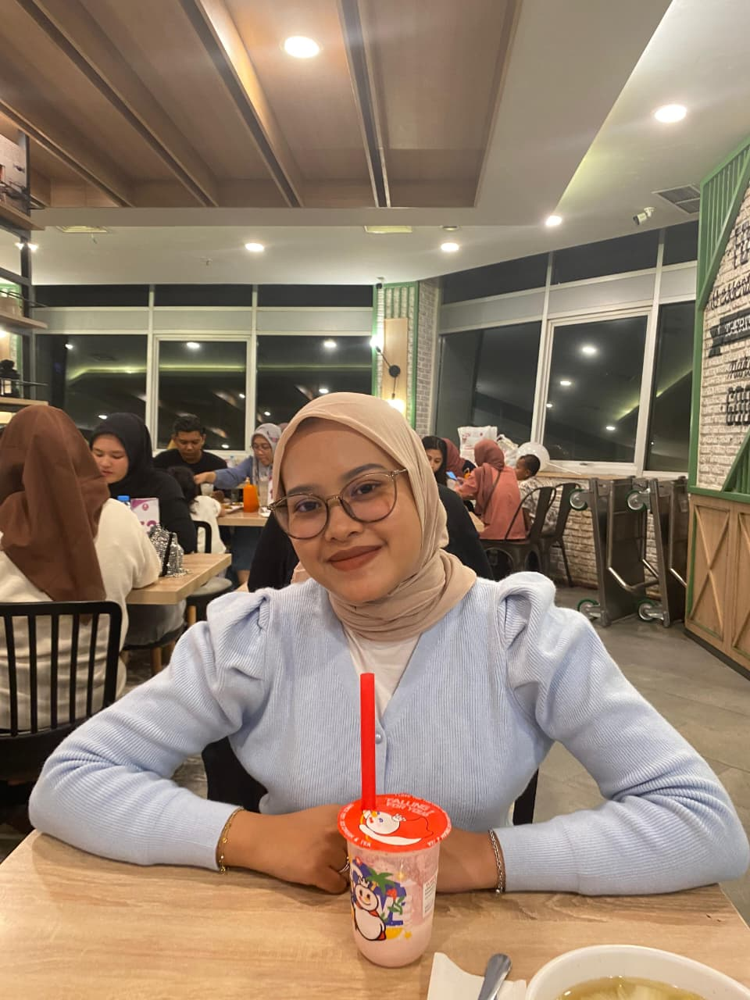

Happy Birtday Indah
udah maok nambah umur yak yee sekarang indah ye tak terase kan. Doe yang terbaiklah buat indah dari will ye moge ttp sehat trus yee... aamiin
bnyak si klo nk ngucapkan ny ade lah sampai 13 lembar klo nulis di buku tu make disingkat yk hehhe....
scroll kebawah
Indah Sulistiawati

Yang paling aku syukuri bukan hanya tentang kita sebagai pasangan, tapi juga tentang kita sebagai tim. Kita saling melengkapi, saling mengisi kekosongan, dan saling mengangkat saat satu sama lain jatuh.
Tidak ada masalah yang terlalu besar untuk kita hadapi bersama, tidak ada rintangan yang tidak bisa kita lewati berdua. Denganmu, aku merasa tidak sendiri menghadapi dunia yang kadang sangat keras ini. Aku bisa berjalan di sisi kamu, memegang tanganmu, dan membangun masa depan bersama.
- will will